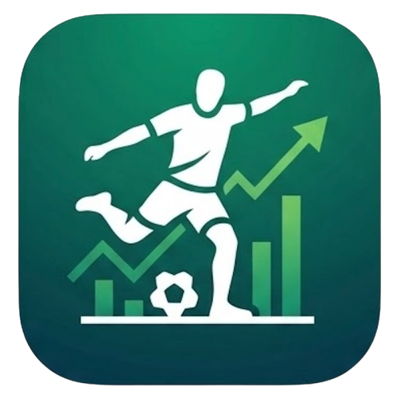

Football Tracker — 专业足球运动追踪与数据分析平台
野球记是一款面向业余足球爱好者的运动数据追踪应用，通过智能手表和手机协同采集 GPS 轨迹与心率数据， 结合多维度算法分析，为每一场训练和比赛提供专业级的运动表现报告。
通过智能手表以 1Hz 频率采集 GPS 数据，精确记录跑动轨迹、距离和速度，支持实时查看运动状态。
实时采集心率数据，采用 Keytel 公式精确估算卡路里消耗，根据年龄、体重提供个性化分析。
自动识别冲刺次数与高强度跑动距离，划分速度区间，量化比赛中的高强度表现。
基于 50×30 网格生成热力图，直观展示场地覆盖范围，帮助球员优化跑位策略。
独创「摸鱼指数」（0-100）量化比赛投入度，结合 5 分钟分段强度分析评估体能分配。
自动解锁运动成就徽章，支持创建和加入球队，查看队友数据与团队排名。
用户可选择使用微信账号快速登录野球记 App，免去注册繁琐流程，一键授权即可开始使用全部功能。
仅通过微信 OAuth 2.0 协议获取用户的 openid 用于身份标识，不获取微信好友列表、朋友圈等隐私信息。